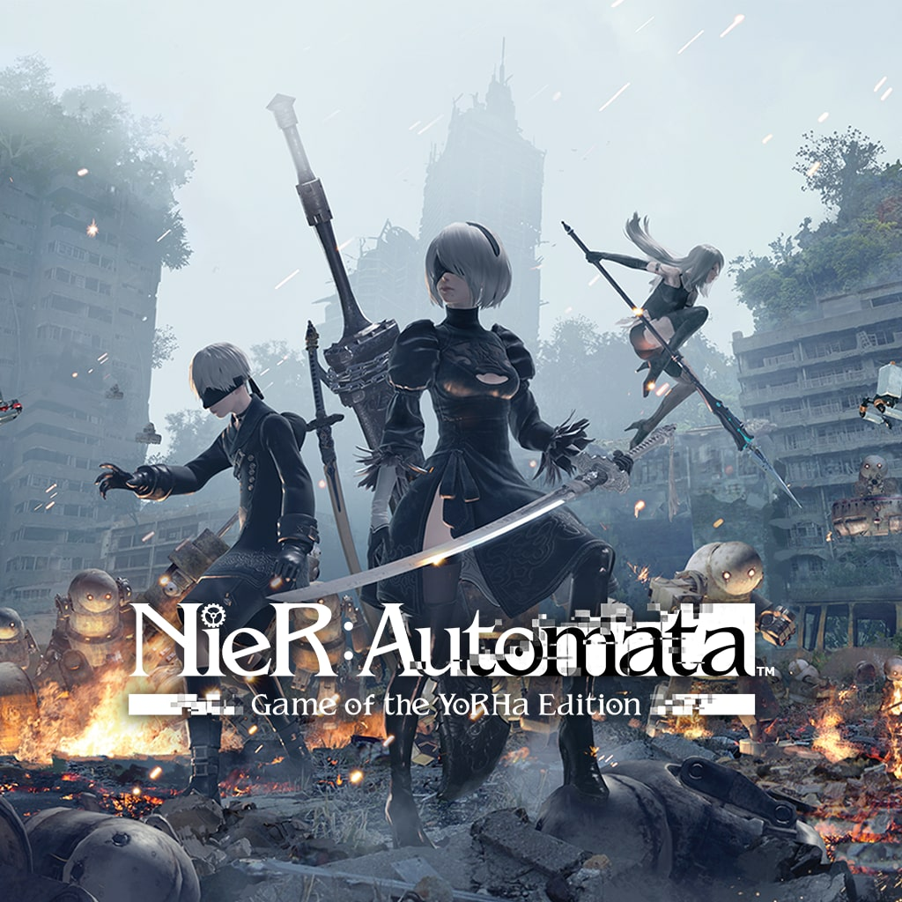
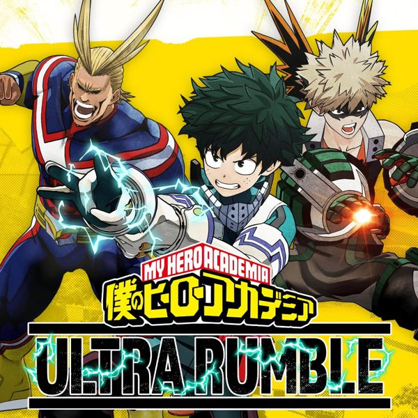
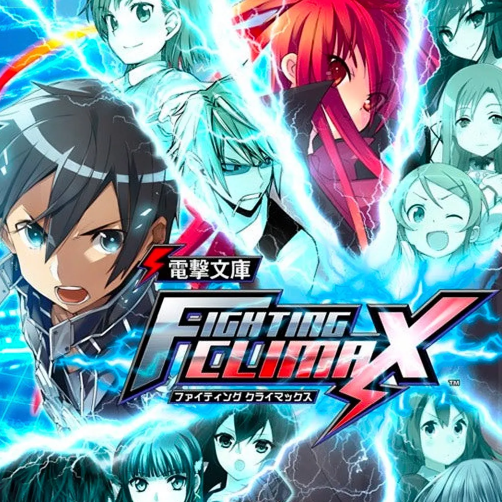
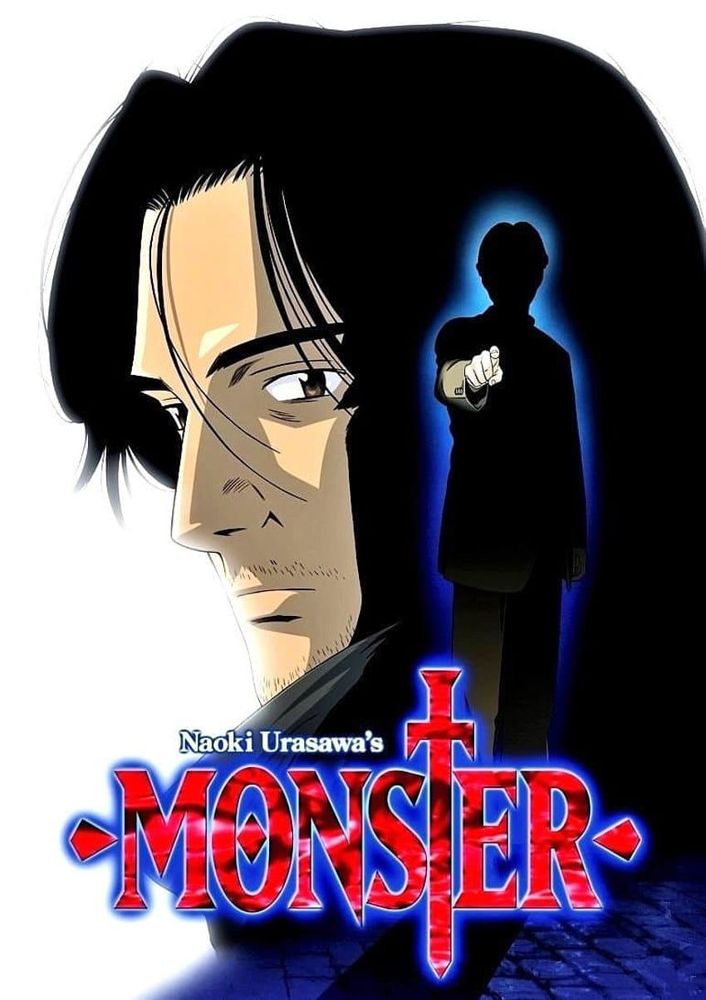

Além do código.
Oi! Sou o Gean, 20 anos, Brasília. Fora do trabalho sou movido por jogos, anime e música — coisas que moldam como eu enxergo design e construo experiências.
Comecei a programar por curiosidade pura — queria entender como as coisas funcionavam por baixo da tela. Descobri que o mesmo instinto que me faz rejugar uma fase até dominar também me faz refatorar código até ficar certo.
Anime me ensinou que personagens com profundidade importam mais que efeitos especiais. Aplico isso em UI: o que parece simples por cima exige muito trabalho por baixo.

Nier: Automata
My Hero Ultra Rumble
Dengeki Bunko Fighting ClimaxMeus jogos favoritos que moldaram como eu enxergo design e experiências.
 Kaoru Hana wa Rin to Saku
Kaoru Hana wa Rin to Saku

MonsterPersonagens com profundidade me ensinaram que o que parece simples por cima exige muito por baixo.